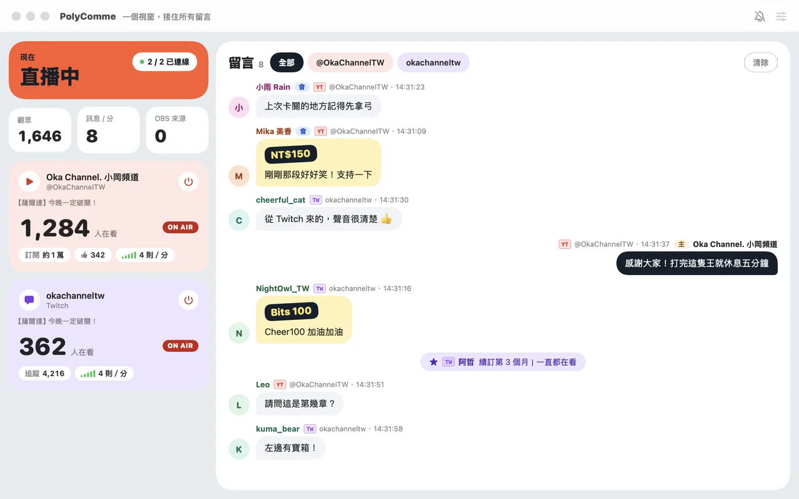
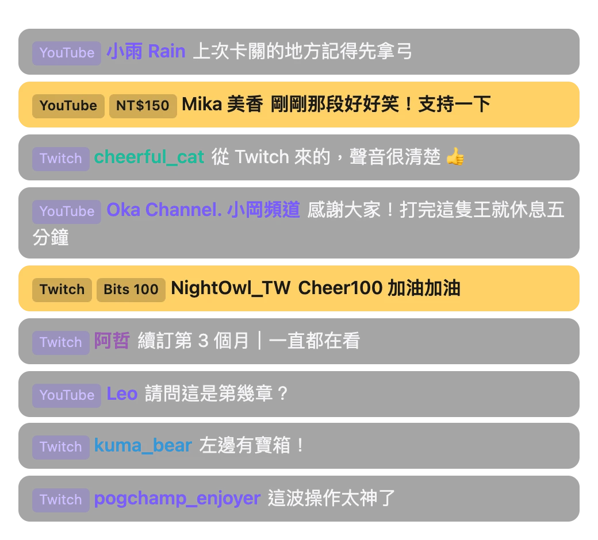

現在
一個視窗，
接住所有留言。
同時在 YouTube 和 Twitch 開台？PolyComme 把兩邊的留言合成一條：你在電腦上一個視窗看完，觀眾在 OBS 畫面上看到同一條留言串。免金鑰、免登入，打開就能用。
第一次打開被 macOS 擋下？看安裝說明
出現「Windows 已保護您的電腦」？看安裝說明
不想安裝？下載免安裝版（{{zipSize}}），解壓縮後打開 PolyComme.exe 就能用。
YouTube
留言・Super Chat
超級貼圖、會員加入
Twitch
留言・小奇點
訂閱、續訂、贈送訂閱

功能
直播時要看的，都在一個畫面
-
兩個平台，一條留言串
YouTube 與 Twitch 的留言照時間排在一起，每一則都標出平台和頻道，同名的帳號也分得出來。只想看某個頻道時，上方點一下就篩出來。
-
付費一眼看到
Super Chat、超級貼圖、小奇點用醒目的顏色；會員加入、訂閱、續訂也會出現在留言串裡。
-
誰在看、聊得多熱
每個頻道的 ON AIR 狀態、觀看人數、訂閱或追蹤數、按讚數，還有每分鐘幾則留言。
-
不想上畫面，一鍵隱藏
滑過留言按一下，就從 OBS 畫面拿掉；管理員在平台上刪除的留言也會跟著消失。
-
休息、靜音不用切回 OBS
連上 OBS 之後，按「休息」就切到休息場景，按麥克風就把 OBS 的麥克風靜音。
-
切到遊戲也不漏看
有新留言時跳出系統通知；有人洗版時自動暫停，不會被通知淹沒。
-
三種語言
繁體中文、English、日本語，隨時切換：Mac 在選單列「顯示方式 → 語言」，Windows 在標題列的「⋯ → 語言」。
不需要登入任何平台帳號，也不需要 API 金鑰。PolyComme 讀的是公開的聊天室；頻道清單和設定都存在你自己的電腦上。
OBS
貼一次網址，之後都不用再改
浮動視窗的網址固定不變：在 App 裡換樣式、調留言底色，OBS 畫面會自己跟著換。
-
加入你的頻道
在「設定 → 頻道」貼上網址：
twitch.tv/頻道名稱、youtube.com/@帳號或單一直播的youtube.com/watch?v=…。 -
複製浮動視窗網址
「設定 → OBS 輸出」裡的網址：
http://localhost:8123/overlay/。 -
在 OBS 新增「瀏覽器」來源
貼上網址，建議大小 600 × 800。開台前可以按「模擬聊天」送假留言，先把位置和樣式調好。

觀眾在直播畫面上看到的樣子。樣式、留言底色都在 App 裡切換，OBS 不用動。
安裝
三步驟裝好
-
下載並打開 DMG
下載 PolyComme {{version}}，打開下載好的
PolyComme-{{version}}.dmg，把 PolyComme 拖到「Applications」。 -
第一次打開：允許執行
PolyComme 還沒有經過 Apple 公證，第一次打開時 macOS 會擋下來。這是正常的，照下面做一次，之後就能直接打開；每次下載新版本都要再做一次。
macOS 15 以上（Sequoia、Tahoe）
- 打開 PolyComme，出現「Apple 無法驗證⋯」時按「完成」。
- 打開「系統設定」→「隱私權與安全性」，捲到最下面的「安全性」。
- 在「已阻擋 PolyComme⋯」旁邊按「強制打開」，輸入密碼，再按一次「強制打開」。
macOS 14 Sonoma
- 對 PolyComme 按右鍵（或 Control＋點按），選「打開」。
- 在跳出的視窗裡再按一次「打開」。
會用終端機的話：一行解決
xattr -dr com.apple.quarantine /Applications/PolyComme.app -
加頻道，開始收留言
打開後照畫面提示加入頻道。要用系統通知的話，第一次會詢問是否允許。
-
下載並執行安裝程式
下載 PolyComme {{version}}，執行下載好的
{{exeName}}。不想安裝的話，也可以下載免安裝版
{{zipName}}：解壓縮後只有一個PolyComme.exe，放在哪裡都能打開；不用了刪掉它就好（設定留在電腦上，下次裝回來照樣能用）。 -
出現「Windows 已保護您的電腦」：仍要執行
PolyComme 還沒有程式碼簽章，第一次執行時 Windows 會擋下來。這是正常的：點「其他資訊」，再按「仍要執行」。之後照安裝精靈完成，只裝給你自己的帳號，不需要系統管理員權限。
-
加頻道，開始收留言
第一次打開時 Windows 防火牆會問要不要讓 PolyComme 連網路：OBS 在同一台電腦就不需要允許，OBS 在另一台電腦才要允許。接著照畫面提示加入頻道。
目前的限制
- 會員限定、需要登入才能看的直播，目前讀不到聊天室。
- 「休息」與麥克風鈕要連上 OBS 28 以上的 WebSocket 伺服器（OBS「工具 → WebSocket 伺服器設定」）。浮動視窗本身只要是 OBS 的瀏覽器來源就能用。
版本紀錄